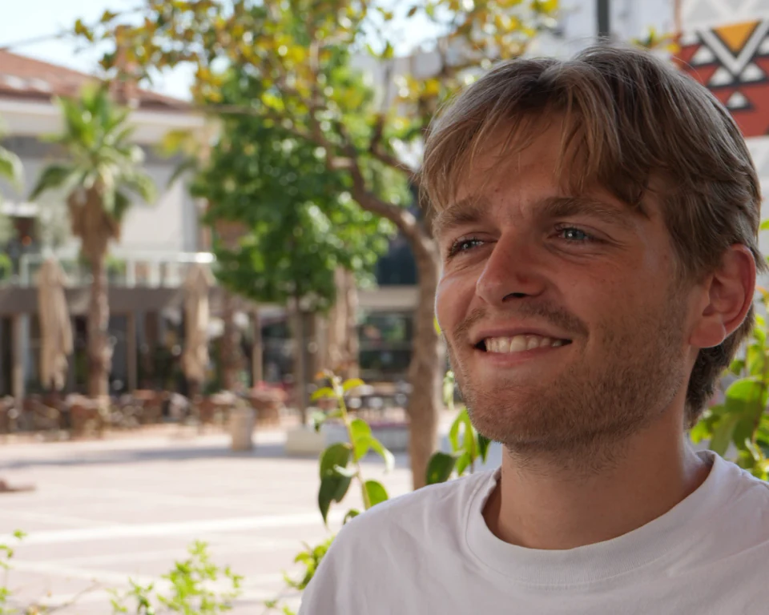

Over mij
Mijn naam is Gijs. Op deze website verzamel ik mijn fotografie: van persoonlijke portretten tot vrij werk en commerciële opdrachten.
Ik hou van spontane beelden met warmte en karakter. In mijn werk zoek ik naar momenten die echt voelen en lang blijven hangen.
Voor mij draait fotografie om mensen vastleggen zoals ze zijn. Ik vind het belangrijk dat de mensen die ik fotografeer met een lach kunnen terugkijken op het moment dat we samen hebben vastgelegd.
Opdrachten
In mijn opdrachten leg ik momenten en verhalen vast voor anderen: bruiloften, evenementen en andere bijzondere dagen. Elke opdracht is anders, en juist dat maakt het werk zo interessant.
Met aandacht voor licht, compositie en het juiste moment maak ik beelden die niet alleen laten zien wat er gebeurde, maar ook hoe het voelde. Samen kijken we wat belangrijk is om vast te leggen, zodat je er later met een lach op terugkijkt.
 21 diner
21 diner
 Evenementen / festivals
Evenementen / festivals
 Portretten
Portretten
 Trouwen
Trouwen


Kunst
Vrijheid blijheid! In mijn kunstfotografie laat ik mijn creativiteit de vrije loop. Zonder regels of verwachtingen ga ik op zoek naar beelden die mij inspireren en die iets laten voelen.
Hier experimenteer ik met licht, compositie en moment om foto's te maken die anders zijn dan mijn opdrachtwerk.
Contact
Ben je geïnteresseerd? Stel jouw fotoshoot samen, dan kijken we samen wat ik voor je kan betekenen.
Stel jouw fotoshoot samen